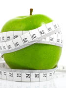
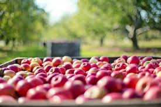
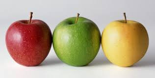
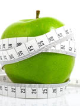
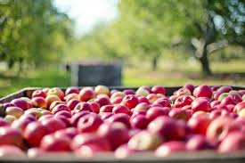

Prenons l'exemple d'une pomme

Toutes les informations nutritives de cette pomme

Qui l'a produite, où, comment, etc ..

La pomme sera comparé a une pomme dîtes "normal" (éco-responsable, fair-trade etc...)

Toutes les informations nutritives de cette pomme

Qui l'a produite, où, comment, etc ..